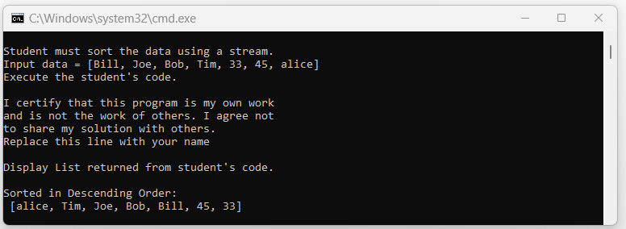

Revised 02/16/26
R. G. Baldwin instructor
A detailed set of instructions is provided in a separate document titled Instructions for Downloading and Submitting Assignments that you can view at the Orientation link in your Blackboard course.
I recommend that you study those instructions very carefully and make yourself a checklist to ensure that you meet all of the requirements before submitting your assignment.
Failure to follow the instructions to the letter usually results in a failing grade, normally zero. The general instructions in that document apply to this assignment. In addition, this document provides specific instructions for the assignment.
If you have any questions regarding instructions, please ask them at least one week prior to the assignment deadline. Don't end up with a bad grade due to the fact that you didn't understand the instructions.
You will find a source code file for the driver class named Proj09.java in the same zip file from which you extracted this project specification.
Software version requirements are specified in the syllabus for this course.
Proj09 Copyright 2023 R.G.Baldwin
Among other things, the purpose of this assignment is to assess your ability to write code dealing with Java streams. Your code must use streams to sort the String data in an incoming array object in case-sensitive descending order and return the sorted data in an object of type List.
This assignment requires that you submit a zip file named YourNameProj09.zip containing the following files where YourName means to insert your last name:
PROGRAM SPECIFICATIONS
Beginning with the file that you downloaded named Proj09.java, create a new file named Proj09Runner.java to meet the specifications given below.
Note that you must not modify the code in the file named Proj09.java.
Be sure to display your name in the output as shown in in Figure 1.
When you place both files in the same folder, compile them both, and run the file named Proj09.java, the program must display the text shown in Figure 1 on the command line screen. Your requirement is not simply to reproduce the output shown in Figure 1. Your requirement is to process the incoming data in such a way as to reproduce the output shown in Figure 1.
The output values depend on the values of command-line arguments that are entered when the program is run. If no command-line arguments are entered, the program defaults to input values of Tom, Dick, and Harry. The output for command-line argument values of Bill, Joe, Bob, Tim, 33, 45, and alice is shown below. Note that numeric values such as 33 entered as command-line arguments are strings.
Your solution for this assignment must use Java streams to sort the data.
Figure 1. RequiredOutput01.png

The image in Figure 1 displays the following text.
Student must sort the data using a stream. Input data = [Bill, Joe, Bob, Tim, 33, 45, alice] Execute the student's code. I certify that this program is my own work and is not the work of others. I agree not to share my solution with others. Replace this line with your name Display List returned from student's code. Sorted in Descending Order: [alice, Tim, Joe, Bob, Bill, 45, 33]
Your output text must match my output text for any command-line arguments that I choose to enter. I will grade your assignment using different command-line arguments than those shown in Figure 1.
SUBMITTING YOUR ASSIGNMENT
Encapsulate the required files in a zip file named YourNameProj09.zip and submit the zip file as a Blackboard assignment.
Your zip file must contain the screenshot file listed above under THE DELIVERABLES in addition to any other files that may be listed there.
The zip file from which you extracted this document contains a file named RequiredOutput01.png.
The screenshot file that you submit must be a screenshot showing a side-by-side comparison of the output from your program and the given file named RequiredOutput01.png. Place the given file on the left, place your output on the right, and take the screenshot.
The purpose of the screenshot is to confirm that your output matches the required output. If it doesn't match, don't bother submitting it because you won't get credit for the assignment if it doesn't match. Just keep working on it until you get a match. Consult your instructor if you have any questions regarding what does and what does not constitute a match.
-end-